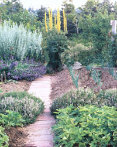
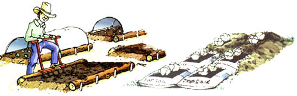

Gardening is easier and soils are healthier when you make permanent beds and paths, rather than digging new beds or rows each year in areas that were walked on the year before. Using the same layout of beds and paths each year protects the soil in the growing beds from compaction and lets you make efficient use of soil amendments and fertilizers.
The beds can be any lengths you want, and as wide across as you can easily reach to tend, or even a single row wide if that's what you prefer. Edging is strictly optional; unedged beds will work just fine and look terrific. If you opt for no edging, just put in some corner stakes to help you keep track of the paths and growing areas. You can frame the beds with hoards or stones if you like the way they look. Or try using logs for edging if you can get them for free on your property or from tree trimmers. (If you plan to use your tiller in the beds, just use logs on the long edges and leave the ends unframed; then you can easily run the tiller down the length of the beds and turn it around on the paths)
There's no need to bring in lots of topsoil to raise the beds above the surrounding soil, unless you have a poorly drained site or want the bed to warm up extra early in the spring. Raised hods do warm up faster, but if you raise the hods more than a couple inches, they will require more water during day spells. Once you stake out permanent beds and paths, the uncompacted soil in the beds will naturally be slightly higher than the paths. You can easily raise the beds a little more by tilling the path areas and then raking the loosened soil from the paths up onto the beds. In dry, windy climates, you may want to reverse the process and make sunken hods, so that your growing areas stay moister and seedlings have a little wind protection.
But raised or sunken, framed or not, designating permanent bed areas and paths will preserve the loose soil that is a key aspect of fertile garden soils.
In addition to not walking on the soil in the planting beds, the other most important step to creating fertile soil is to add plenty of organic matter each year. For new beds, "plenty" can be as much as 4 or even 6 inches of mature compost, tilled in. But in subsequent years, just one-fourth to one-half inch of compost per year usually will provide all the nutrients your crops will need. If you don't have enough compost, a few inches of grass clippings used as a mulch will provide the same benefits. With permanent hods, you will need less compost and mulch and you'll apply it directly to the growing areas each year, while the less-rich and more-compacted soil in the paths makes it harder for weeds to thrive.
So you a patch of grass or weeds that you want to turn into a bed: Here are three bed-building techniques, ranked from the ideal choice, option No. 1, to the quickest and easiest, option No. 3.
Kill the grass or weeds by tilling or plowing the area. (If the area has weeds that spread by runners or underground roots, it would be best to smother them using technique No. 2, before you till the soil). After you've tilled, spread several inches of compost or grass clippings and till again. To destroy remaining weed seeds, water the cultivated bed, then hoe or till shallowly as soon as weed seedlings appear. Repeat this water/sprout/hoe routine several times before planting your vegetable or flower seeds, if possible.
If you don't have time to till and spread compost, just cover the area with cardboard or several layers of wet newspapers, followed by several inches of grass clippings, shredded leaves or weed-free hay or straw. The first year, use the bed for transplants like tomatoes or peppers, rather than direct-seeded crops, and add an organic vegetable fertilizer (a fish/seaweed blend is a good choice.)
For instant beds, punch drainage holes on one side of enough hags of topsoil to cover the bed area. (Topsoil quality varies; we recommend buying your soil at a garden center rather than opting for ultra-cheap 99 cent bags at a discount store) Lay the bags out to cover the bed, cut away the tops and plant your seeds or transplants. Mulch with grass clippings or leaves to hide the plastic. The plastic bags will smother the grass or weeds, and at the end of the season you can pull away the plastic and use a garden fork or tiller to mix the topsoil in and prepare the bed for your next crop.
Whichever methods you use, if you avoid walking on the bed areas and add fresh compost each year, you will soon have rich, loose garden soil chat will warm up quickly in the spring and produce healthy, abundant crops. Spring preparation will be a snap with a garden fork or broadfork such as the one shown in the illustration on Page 70.
If you're a beginning gardener, or starting a garden in a new location, have your soil tested. The cost is often less than $10. For a list of soil testing labs, go to our new Soil Testing Labs Directory at www.motherearthnews.com
You can add compost or other organic matter without testing first, but never add lime, sulfur or other amendments unless you have a soil test that indicates they are needed. You can permanently damage a soil by adding too much or the wrong amendments.
|
 LYNN KARLIN This lush and productive garden was created by Jutta and Peter Graf on Deer Isle, Maine. |
BECKY WHALEY This lovely combination of edible and ornamental beds is at the Seed Savers Exchange's Heritage Farm near Decorah, Iowa. |
 BRIAN ORR Left: For low-cost edging, use logs from your local tree trimmers. Leave the ends of the beds open if you plan to use a rototiller. Right: You can make instant beds anywhere using bags of topsoil covered with mulch. |
|
DAVID CAVAGNARO Flowers and vegetables are beautifully blended in this elegant parterre with grass paths in Victoria, Australia. |
|
|